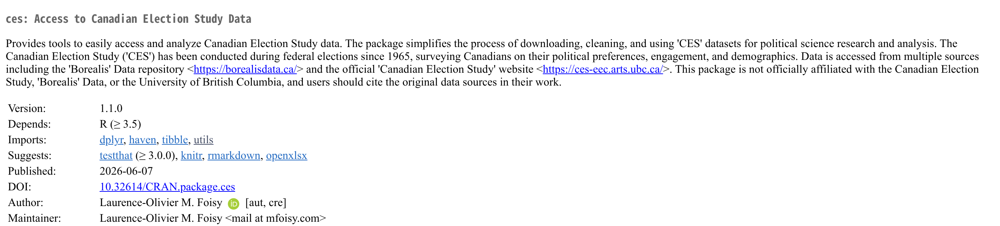
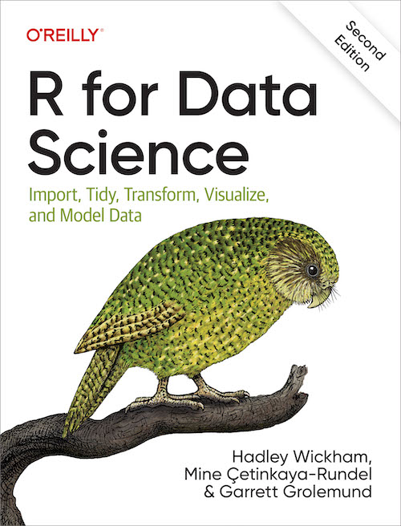
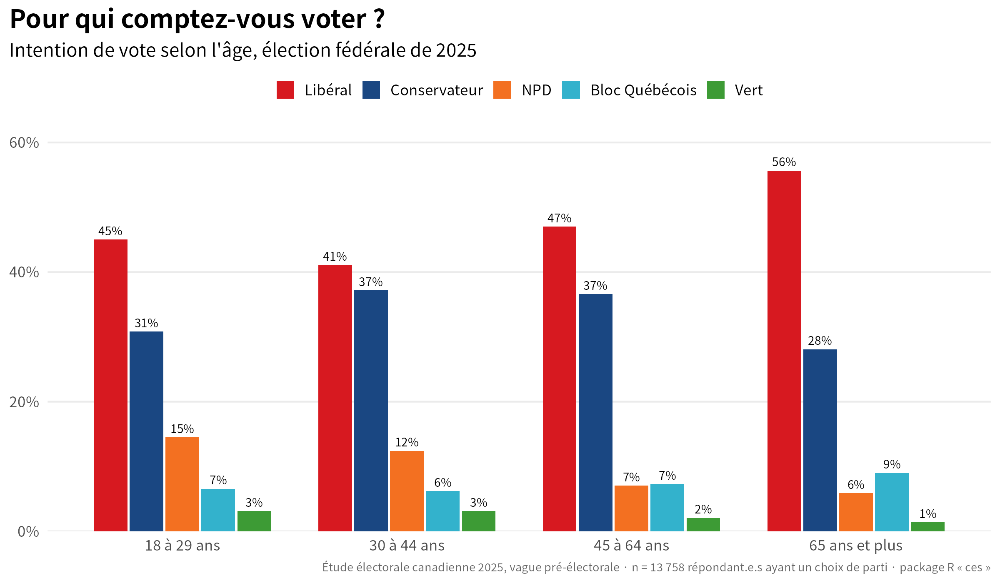
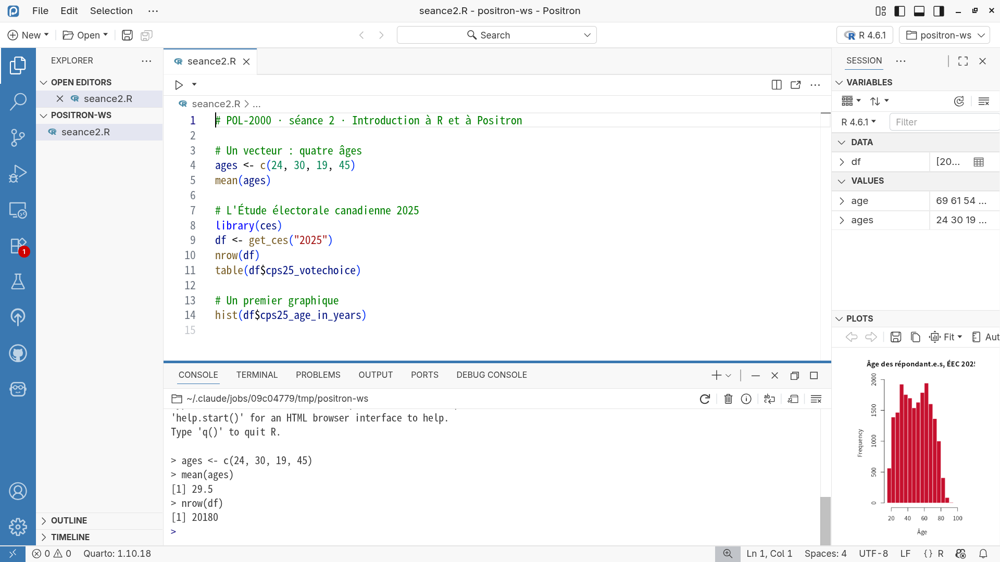
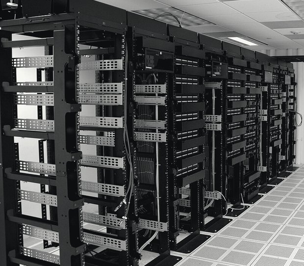

POL-2000 · Méthodologie quantitative
Introduction à R et à Positron
Séance 2 · jeudi 10 septembre 2026
Faculté des sciences sociales Automne 2026
Introduction à R et à Positron
R à partir de zéro.
Apportez l'ordinateur, installé.
À main levée
- R et Positron sont installés ?
- Vous avez ouvert Positron au moins une fois ?
- Avez-vous accepté l’invitation à Slack ?
- Avez-vous accepté l’invitation à Datacamp ?
« Pourquoi pas Excel ? »
Parce qu’un clic ne laisse pas de trace.
Pourquoi R ?
Le code est ouvert. Tout le monde peut le lire, le vérifier, le modifier.
Pour toujours, pour tout le monde. Pas de licence à payer, pas d’abonnement.
Des millions de personnes. Votre problème a déjà été résolu, et la réponse est en ligne.
Pour ses utilisateurs. Un besoin apparaît, quelqu’un écrit l’outil.
Écrire une nouvelle fonction, l’empaqueter, la donner aux autres : c’est prévu.
Sur le CRAN, le dépôt officiel, comptés cette semaine. Des milliers d’autres ailleurs.
Le plus utilisé dans votre domaine. Vos collègues, vos profs, vos futures données.
Un script se relance et redonne le même résultat. À vous, à moi, dans dix ans.
Un fichier texte. On l’envoie, on le lit, on le corrige ensemble.
Chaque étape est écrite. Une erreur a une ligne, et la ligne se corrige.
Vous pouvez même créer le vôtre

cran.r-project.org/package=ces
Le package ces : les données de l’Étude électorale canadienne, de 1965 à 2025, en une ligne de R.
Publié sur le dépôt officiel de R.
install.packages("ces")Ça s’apprend, et gratuitement
 Datacamp Des exercices interactifs, à votre rythme. obligatoire · 10 % de la note swirl Apprendre R dans R : un package qui vous pose des questions dans la console. gratuit · install.packages("swirl")
Datacamp Des exercices interactifs, à votre rythme. obligatoire · 10 % de la note swirl Apprendre R dans R : un package qui vous pose des questions dans la console. gratuit · install.packages("swirl") 
R for Data Science Le livre de référence, écrit par les auteurs du tidyverse. Gratuit, en ligne, en anglais. r4ds.hadley.nz
Ils l’utilisent aussi
 infographies et cartes électorales
infographies et cartes électorales analyse et prévision
analyse et prévision expérimentation et statistiques
expérimentation et statistiques prévision de la demande
prévision de la demandeLes logiciels d’analyse
 R gratuit · libre · fait pour les données
R gratuit · libre · fait pour les donnéesLes deux outils du semestre
R LE LANGAGE la calculatricePositron, zone par zone

cliquez, ou flèche droite : une zone à la fois
Avant de commencer : l’arborescence des fichiers
Pour trouver ce local, on va du plus grand au plus petit : le pays, la ville, l’université, le pavillon, la porte. Un fichier a une adresse pareille.
Deux façons d’écrire un chemin
Ne marche que sur votre ordinateur.
Marche partout où le dossier pol2000 existe.
Error: '\U' used without hex digits in character string
\ par / Charger ses propres données
Le tableau texte universel. Excel, Google Sheets et tous les sites de données l’exportent.
df <- read.csv("data/ces.csv")Le format de R. Garde tout : les étiquettes, les types, les facteurs. Le package ces vous donne des .rds.
df <- readRDS("data/ces.rds")SPSS. La plupart des grands sondages de sciences sociales sont livrés ainsi, étiquettes comprises.
df <- haven::read_sav("data/ces.sav")Excel. Une feuille à la fois ; dites laquelle avec sheet = si ce n’est pas la première.
df <- readxl::read_excel("data/ces.xlsx")Toujours le même geste : un nom d’objet, la flèche, une fonction qui lit, et entre guillemets le chemin relatif, depuis le dossier ouvert dans Positron. Le tableau apparaît dans « Variables ».
Avant de commencer : la mentalité à adopter
Trop gros. Donc on coupe.
Une calculatrice
> 2 + 2
[1] 4
> 10 / 3
[1] 3.333333
> 2^10
[1] 1024
> 1:30
[1] 1 2 3 4 5 6 7 8 9 10 11 12 13 14 15 16 17 18 19 20 21 22 [23] 23 24 25 26 27 28 29 30
Le [1] et le [23] : la position du premier élément de chaque ligne. R répond toujours par une liste, même d’un seul nombre.
> ▍Ranger un résultat
> age <- 25
Rien ne s’affiche. R a rangé 25 dans age. Regardez « Variables ».
> age [1] 25
> age + 1
[1] 26
> age [1] 25
Toujours 25. Calculer n’est pas ranger : sans flèche, rien ne change.
> age <- age + 1 age
[1] 26
> ▍L’anatomie d’une ligne
moyenne <- mean(ages, na.rm = TRUE)
Lue de droite à gauche : calcule ceci, range-le là.
Plusieurs valeurs, un seul objet
# quatre personnes, quatre âges
> ▍ Quatre ami.e.s, quatre âges. Des valeurs qui vont ensemble, mais encore en vrac.
Quatre types de variables
Structure des données : 1D vs 2D
noms <- c("Alice", "Bob")
ages <- c(24, 30)df <- data.frame(nom = noms, age = ages)
> ages[1] 24 30
Un vecteur : une rangée de cases. On avance d’une case à la suivante, dans un seul sens.
Une fonction, c’est une machine
Des valeurs entrent, un résultat sort. On ne voit pas dedans, et c’est correct : c’est une fonction.
Les erreurs classiques
mean(ages)mean(agesError: unexpected end of input
R attend encore. Il ne dit rien, ou il dit ceci : il manque quelque chose pour fermer.
c(24, 30)c(24 30)Error: unexpected numeric constant
Deux valeurs collées. R lit un nombre là où il attendait une virgule.
agesAgesError: object 'Ages' not found
R distingue les majuscules. Ages et ages sont deux objets, et le second n’existe pas.
Lire une erreur
1 library(dplyr)
2 df <- swiss
3 df |> select(fertility, Education) Error in select(df, fertility, Education) : Can't select columns that don't exist. ✖ Column `fertility` doesn't exist.
C’est R qui dit : « je n’ai pas compris ».
- Lire le message
- Corriger la ligne
- Relancer
Les packages : la boîte à outils
install.packages("tidyverse")library(tidyverse)L’Étude électorale canadienne 2025
Le grand sondage universitaire de chaque élection fédérale depuis 1965. Une ligne par personne, un code par réponse. Il arrive dans R par le package ces ; rien à télécharger à la main.
- cps25_votechoice
- pour quel parti la personne compte voter (codes 1 à 8)
- cps25_age_in_years
- âge, en années
- cps25_education
- plus haut niveau de scolarité (codes 1 à 11)
- cps25_province
- province ou territoire (11 = Québec)
- cps25_income
- revenu du ménage, par tranche (codes 1 à 8)
- cps25_genderid
- identité de genre
Charger
> library(ces)
Le package de tantôt. Installé une fois avec install.packages("ces"), chargé à chaque session avec library().
> library(dplyr) library(haven)
dplyr manipule les tableaux ; haven lit les étiquettes des sondages (« 2 = Conservative Party »). Les deux viennent avec le tidyverse.
> df <- get_ces("2025")
trying URL 'https://dataverse.harvard.edu/api/access/datafile/13958997' downloaded 57.6 MB Data loaded successfully: 20180 rows and 1440 columns CES 2025 (web) dataset ready for use
> saveRDS(df, "ces2025.rds")
> ▍Explorer
> nrow(df)
[1] 20180
Une ligne, une personne qui a répondu au sondage.
> ncol(df)
[1] 1440
Une colonne, une question. Mille quatre cent quarante.
> names(df)[1:8]
[1] "cps25_time" "cps25_consent" "cps25_citizenship" "cps25_citizen_other" [5] "cps25_citizen_other2" "cps25_citizen_other3" "cps25_age_in_years" "cps25_genderid"
Les huit premiers noms sur 1 440. cps25 : « campaign period survey », la vague pendant la campagne de 2025.
> ▍Regarder
> df |> select(cps25_age_in_years, cps25_province, cps25_votechoice) |> head()
# A tibble: 6 × 3 cps25_age_in_years cps25_province cps25_votechoice <dbl+lbl> <dbl+lbl> <dbl+lbl> 1 69 [69. 69] 2 [2. British Columbia] 2 [2. Conservative Party] 2 61 [61. 61] 1 [1. Alberta] 3 [3. NDP] 3 54 [54. 54] 11 [11. Quebec] 2 [2. Conservative Party] 4 28 [28. 28] 9 [9. Ontario] 1 [1. Liberal Party] 5 63 [63. 63] 9 [9. Ontario] 1 [1. Liberal Party] 6 28 [28. 28] 2 [2. British Columbia] 2 [2. Conservative Party]
select() choisit trois colonnes sur 1 440, head() garde six lignes ; on y revient dans un instant. Une ligne, une personne. Une case : un code et, entre crochets, ce qu’il veut dire.
> View(df)
S’ouvre dans l’onglet Données de Positron. Le tableau entier, à faire défiler : 20 180 lignes, 1 440 colonnes.
> ▍Une variable
> length(df$cps25_age_in_years)
[1] 20180
Le $ sort une colonne du tableau. Une colonne, c’est un vecteur : 20 180 âges. (Ne l’affichez pas tout seul : R les déverse tous.)
> mean(df$cps25_age_in_years)
[1] 49.71511
> summary(df$cps25_age_in_years)
Min. 1st Qu. Median Mean 3rd Qu. Max. 18.00 35.00 50.00 49.72 64.00 96.00
Six chiffres pour une variable.
> ▍Des codes et leurs étiquettes
> table(df$cps25_votechoice)
1 2 3 4 5 6 7 8 6528 4644 1258 1011 317 82 1887 182
Pour qui comptez-vous voter ? Un effectif par code. Qui est le 2 ?
> levels(as_factor(df$cps25_votechoice))
[1] "1. Liberal Party" "2. Conservative Party" [3] "3. NDP" "4. Bloc Québécois" [5] "5. Green Party" "6. Another party (please specify)" [7] "7. Don't know/ Prefer not to answer" "8. People's Party"
as_factor(), de haven, lit l’étiquette collée à chaque code. 1 libéral, 2 conservateur, 3 NPD, 4 Bloc, 5 vert ; 6, 7 et 8 : autre, ne sait pas, PPC.
> ▍Sa forme
hist(df$cps25_age_in_years)
mean(df$cps25_age_in_years)
[1] 49.71511 Choisir des colonnes, garder des lignes
> df |> select(cps25_age_in_years, cps25_province, cps25_votechoice) |> head(3)
# A tibble: 3 × 3 cps25_age_in_years cps25_province cps25_votechoice <dbl+lbl> <dbl+lbl> <dbl+lbl> 1 69 [69. 69] 2 [2. British Columbia] 2 [2. Conservative Party] 2 61 [61. 61] 1 [1. Alberta] 3 [3. NDP] 3 54 [54. 54] 11 [11. Quebec] 2 [2. Conservative Party]
select() choisit des colonnes. Trois sur 1 440.
> df |> filter(cps25_province == 11) |> nrow()
[1] 4906
filter() garde des lignes. Le code 11, c’est le Québec : 4 906 répondant.e.s sur 20 180.
> ▍Le pipe : « et ensuite »
s_habiller(
se_secher(
se_doucher(
se_lever(moi)
)
)
)moi |> se_lever() |> se_doucher() |> se_secher() |> s_habiller()
Le pipe prend ce qui est à gauche et le passe à la fonction de droite. Lisez |> comme « et ensuite ». Vous croiserez aussi %>% : même chose, plus vieux.
Enchaîner
> df |> filter(cps25_province == 11) |> select(cps25_age_in_years, cps25_province, cps25_votechoice) |> head(3)
# A tibble: 3 × 3 cps25_age_in_years cps25_province cps25_votechoice <dbl+lbl> <dbl+lbl> <dbl+lbl> 1 54 [54. 54] 11 [11. Quebec] 2 [2. Conservative Party] 2 60 [60. 60] 11 [11. Quebec] 1 [1. Liberal Party] 3 46 [46. 46] 11 [11. Quebec] 2 [2. Conservative Party]
Trois verbes à la suite : le pipe passe le tableau de l’un au suivant. Une étape par ligne, ça se lit comme une recette.
> ▍Résumer par groupe
> df |> filter(cps25_votechoice %in% 1:5) |> mutate(parti = as_factor(cps25_votechoice)) |> group_by(parti) |> summarise(age = mean(cps25_age_in_years), n = n())
# A tibble: 5 × 3 parti age n <fct> <dbl> <int> 1 1. Liberal Party 52.6 6528 2 2. Conservative Party 49.7 4644 3 3. NDP 44.7 1258 4 4. Bloc Québécois 52.9 1011 5 5. Green Party 45.8 317
filter() garde les cinq grands partis ; mutate() crée une colonne ; group_by() sépare ; summarise() résume chaque groupe. Une question : l’âge moyen change-t-il d’un parti à l’autre ? Le NPD et les verts recrutent plus jeune.
> ▍Un graphique, couche par couche
Une ligne, un résultat
> d2 <- df |> filter(cps25_votechoice %in% c(1:5, 8), cps25_income <= 8) |> mutate(conservateur = cps25_votechoice == 2)
Un parti nommé, un revenu donné. conservateur vaut TRUE ou FALSE : R compte 1 ou 0.
> mean(d2$conservateur)
[1] 0.3305243
La moyenne de vrais et de faux, c’est une proportion : 33 % comptent voter conservateur.
> lm(conservateur ~ cps25_income, data = d2)
Call:
lm(formula = conservateur ~ cps25_income, data = d2)
Coefficients:
(Intercept) cps25_income
0.28364 0.01001 > ▍Le script entier, 1 de 4
# POL-2000 · séance 2 · Introduction à R et à Positron
# À refaire chez vous, ligne par ligne, Ctrl + Entrée.
# 1. Les boîtes à outils (installées une fois : install.packages(c("ces", "tidyverse")))
library(ces) # l'Étude électorale canadienne, de 1965 à 2025
library(dplyr) # manipuler des tableaux
library(haven) # lire les étiquettes des sondages
library(ggplot2) # dessiner
# 2. L'Étude électorale canadienne 2025 : 20 180 personnes, 1 440 questions
df <- get_ces("2025") # Internet, une trentaine de secondes
saveRDS(df, "ces2025.rds") # la prochaine fois : df <- readRDS("ces2025.rds")
nrow(df)
ncol(df)
names(df)[1:8]
df |> select(cps25_age_in_years, cps25_province, cps25_votechoice) |> head()Le script entier, 2 de 4
# 3. Une variable
mean(df$cps25_age_in_years)
summary(df$cps25_age_in_years)
hist(df$cps25_age_in_years)
table(df$cps25_votechoice)
levels(as_factor(df$cps25_votechoice))
# 4. Choisir des colonnes, garder des lignes, résumer par groupe
df |> select(cps25_age_in_years, cps25_province, cps25_votechoice) |> head(3)
df |> filter(cps25_province == 11) |> nrow()
df |>
filter(cps25_votechoice %in% 1:5) |>
mutate(parti = as_factor(cps25_votechoice)) |>
group_by(parti) |>
summarise(age = mean(cps25_age_in_years), n = n())Le script entier, 3 de 4
# 5. Un graphique, couche par couche
d <- df |>
filter(cps25_votechoice %in% 1:5, cps25_education <= 11) |>
mutate(parti = as_factor(cps25_votechoice),
scolarite = cut(cps25_education, c(0, 5, 7, 11),
labels = c("Secondaire ou moins", "Collégial", "Universitaire"))) |>
count(scolarite, parti) |>
group_by(scolarite) |>
mutate(part = n / sum(n))
ggplot(d, aes(x = scolarite, y = part, fill = parti)) +
geom_col(position = "dodge") +
labs(x = "Scolarité", y = "Part des intentions de vote", fill = "Parti",
title = "Étude électorale canadienne 2025") +
theme_minimal()Le script entier, 4 de 4
# 6. Une ligne, un résultat
d2 <- df |>
filter(cps25_votechoice %in% c(1:5, 8), cps25_income <= 8) |>
mutate(conservateur = cps25_votechoice == 2)
lm(conservateur ~ cps25_income, data = d2)
# 7. À vous : remplacez cps25_income par cps25_education, partout. Que change-t-il ?Utiliser l’IA pour coder
Le contrat, rappel
Ce que ça coûte
Je suis biaisé.
Ma carrière repose sur l’IA. Je pense que vous devez l’apprendre pour vous placer dans un monde qui change vite.
L’IA est tangible

- 100 000 GPU dans un seul bâtiment, à Memphis NVIDIA, 2024
- 35 turbines à gaz brûlées sur place pour l’alimenter, 15 permises TechCrunch, 2025
- 35 000 foyers québécois l’électricité de ces GPU pendant un an NVIDIA · Hydro-Québec
- 700 000 litres d’eau évaporés pour entraîner GPT-3 Li et al., 2025
- 25 t de CO₂e pour entraîner BLOOM, mesurées au compteur Luccioni et al., 2023
- 1,5 % de l’électricité mondiale pour les centres de données en 2024, le double en 2030 AIE, 2025
- − 17 % à l’examen pour les élèves qui ont pratiqué avec ChatGPT sans garde-fou Bastani et al., 2025
- − 19 % d’emploi chez les 22 à 25 ans dans les métiers les plus exposés à l’IA Brynjolfsson et al., 2026
Sources NVIDIA, communiqué, 28 oct. 2024 · TechCrunch, 3 juill. 2025 · Hydro-Québec, 17 600 kWh par foyer et par an · Li, Yang, Islam & Ren, 2025, Communications of the ACM · Luccioni, Viguier & Ligozat, 2023, JMLR · AIE, Energy and AI, 2025 · Bastani et al., 2025, PNAS · Brynjolfsson, Chandar & Chen, 2026, Stanford Digital Economy Lab
La bonne question
ça marche pas, pourquoi ?
Je suis étudiant.e en science politique, débutant.e en R, dans Positron.
Je veux garder seulement les provinces dont la scolarité dépasse 20 %.
Voici mon code : df |> filter(education > 20)
Et l’erreur : object 'education' not found
Explique-moi ce qui cloche et pourquoi. Ne réécris pas tout le script.
Rien à quoi répondre. L’assistant devinera, et il devinera avec assurance.
Avant jeudi prochain
 Rejoindre Slack
Rejoindre Slack Jeudi prochain
Les statistiques descriptives et la visualisation des données.
Merci.
Faculté des sciences sociales POL-2000 · Automne 2026